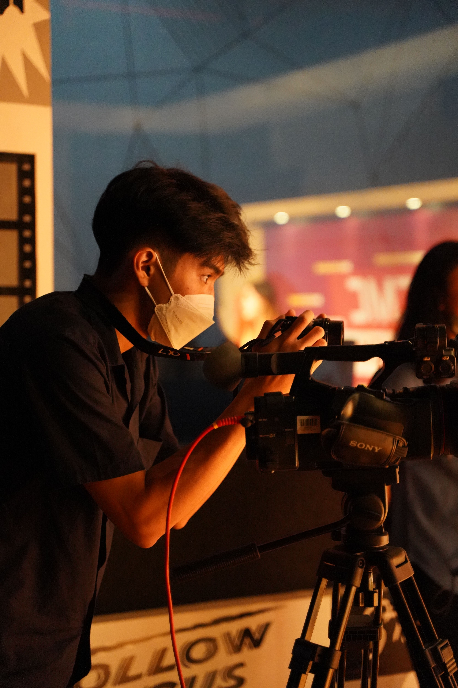
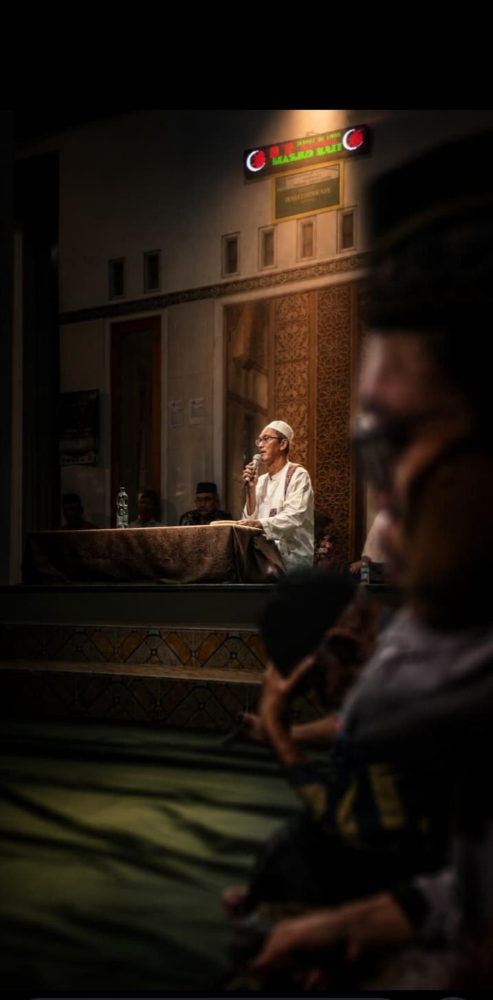
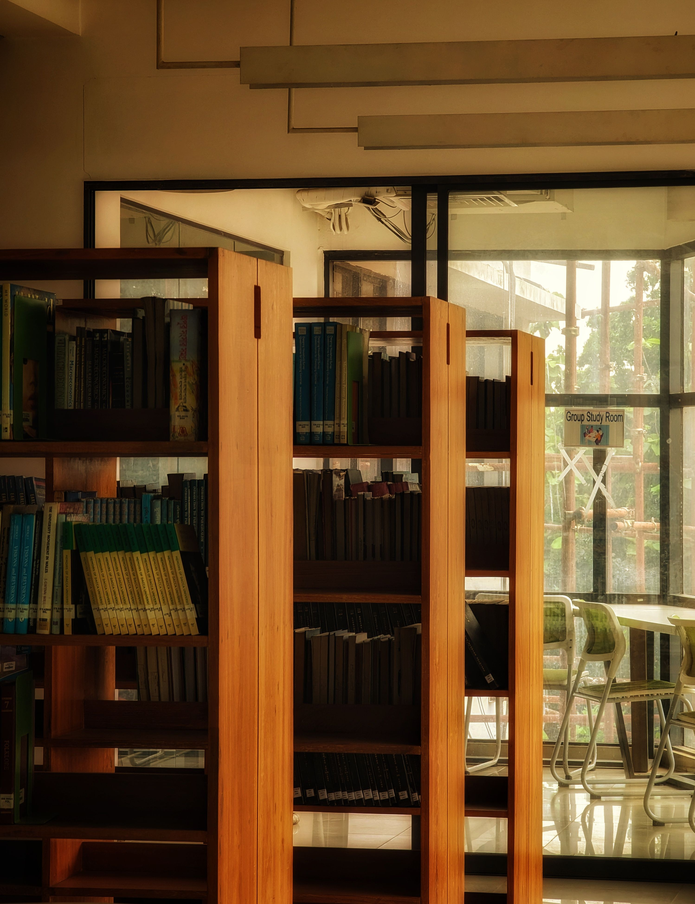

The Perfect Performance
Explore a world full of creative work
Ruang Redaksi & Pojok Baca
Di sudut ruang baca dan meja diskusi yang hangat, ide-ide santri diracik menjadi cerita yang bernyawa. Setiap obrolan ringan, catatan kecil, hingga perdebatan gagasan selalu punya ruang untuk tumbuh di Santriverse. Dari secangkir semangat belajar hingga lembar liputan, semuanya hadir untuk menyalakan nalar dan rasa.
Di sinilah tradisi pesantren berjumpa dengan cara bercerita generasi masa kini yang lebih dekat dan relevan. Kami merangkum kisah nyata, opini jujur, dan sudut pandang segar agar setiap pembaca merasa ikut terlibat.
Rubrik Pilihan
Ruang baca Santriverse menghadirkan liputan hangat, opini segar, dan kajian bermakna dari para santri. Setiap tulisan diracik dengan jurnalistik yang jernih, gaya yang dekat, dan narasi yang tetap beradab.

Liputan Pesantren
LIPUTANMenelusuri aktivitas, persoalan, dan kisah inspiratif dari kehidupan pesantren yang jarang terjamah. Liputannya dekat dengan fakta, manusia, dan suasana yang benar-benar hidup.
Opini & Gagasan
OPINISudut pandang santri muda tentang budaya, teknologi, dan perubahan sosial yang sedang terjadi. Setiap gagasan disampaikan secara reflektif, relevan, dan berani tetap berkelas.

Kajian Kitab & Nalar
KAJIANMenjadikan teks kitab dan tradisi keilmuan sebagai pijakan untuk membaca persoalan masa kini. Kajian disajikan ringan, mendalam, dan tetap menjunjung adab mencari ilmu.

Catatan Santri
CATATANJurnal harian, potongan pengalaman, dan temuan kecil yang lahir dari proses belajar bersama. Tulisan singkat ini membuktikan bahwa ruang pesantren selalu kaya cerita.
Suara Pembaca & Kontributor
Santriverse merayakan cerita, gagasan, dan keseharian santri dengan sudut pandang yang dekat dengan generasi hari ini. Simak kesan pembaca dan kontributor yang menemukan ruang untuk bertumbuh, berbagi, dan saling menginspirasi di sini.

“Santriverse menjadi ruang belajar dan pelaporan bagi santri untuk menulis persoalan pesantren secara akurat, kritis, dan bertanggung jawab. Lewat liputan, opini, dan dokumentasi, kami berusaha menghadirkan kebenaran dari suara mereka yang terdekat.”
Liputan & Rubrik Pilihan
Santriverse menyajikan tulisan, liputan, dan gagasan santri yang lahir dari pengalaman langsung di pesantren. Setiap rubrik membawa fakta, refleksi, dan suara manusia untuk dibaca generasi yang kritis dan kreatif.
Agenda & Liputan Kegiatan
Agenda Santriverse mendokumentasikan kegiatan belajar, diskusi, dan hidup sehari-hari santri dari sudut pandang jurnalistik. Setiap liputan menghadirkan fakta, gagasan, serta pengalaman manusia di balik kegiatan pondok.
Halaqah Literasi & Jurnalistik Santri
Santri belajar menggali informasi, menulis laporan, dan membangun sudut pandang yang kritis lewat diskusi literasi bersama.
- 1.2K
- 2K
- Baca Selengkapnya
Jejak Karya: Bedah Buku & Esai Santri
Melalui bedah buku dan esai, santri berbagi gagasan untuk menelaah teks, budaya, dan perubahan sosial secara reflektif.
- 1.2K
- 2K
- Baca Selengkapnya
Liputan Lapangan: Dinamika Kehidupan Pondok
Tim liputan mendokumentasikan keseharian santri, proses belajar, persaudaraan, dan aktivitas yang membentuk suasana pesantren.
- 1.2K
- 2K
- Baca Selengkapnya
Jelajahi Cerita & Gagasan
Baca liputan, catatan lapangan, dan gagasan santri yang lahir dari kejadian nyata serta pengalaman hidup di pesantren. Temukan rubrik yang memperluas cara pandang lewat tulisan yang jujur, relevan, dan humanis.